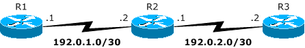

-
 CORPORATE INFO
CORPORATE INFO -
 OUR SERVICES
OUR SERVICES -
 STAY CONNECTED
STAY CONNECTED -
 CONTACT INFO
CONTACT INFO- E-mail:
Contact Us page - Telephone:
+1 972 863 CORE - Address:
3136 Round Tree Ln
Frisco, TX 75034-4589
- E-mail:
Understanding the "network" command
Many network engineers seem to misunderstand the use of the network command in routing protocols on Cisco IOS, especially once they see the usage in BGP. This occurrence happens more frequently with those studying to become a CCNA, but may not be obvious to experienced engineers either. Based on my own experience, I have very distinct memories of confusion when the concept I understood was first corrected by a more experienced engineer. So let's breakdown the confusion.
What does the "network" command REALLY do?
Cisco IOS has two different uses for the network command, as it relates to IGPs (like OSPF and EIGRP) and BGP. In BGP, the network command is used to introduce the prefix it represents to the BGP table. BGP will not introduce that prefix if the route is not already known in the global routing table (or VRF table with VRF-Lite and MPLS VPN). Instead, the command has no effect if the network isn't already known (whether learned by IGP, configured statically, or directly connected). IGPs, on the other hand, don't use the network command to advertise that network to any neighbors it might form. Instead, the network command provides a method to enable a routing protocol instance on certain interfaces. Quoting from the command reference on EIGRP:
When the network command is configured for an EIGRP routing process, the router matches one or more local interfaces. The network command will match only local interfaces that are configured with addresses that are within the same subnet as the address that has been configured with the network command. The router will then establish neighbors through the matched interfaces.
Clarifying Example of the "network" command
Here's a simple example for this discussion with three routers connected via two point-to-point circuits:
Assume the following configuration for R2:
router ospf 1 network 192.0.1.0 0.0.0.3 area 0 network 192.0.2.0 0.0.0.3 area 0
Since both networks appear on R2, the router will attempt to form OSPF neighbors with other routers on those segments. But those networks won't be advertised in OSPF through those two statements, as such. Instead, OSPF will include any interfaces that match the two network statements in its Database Descriptor exchanges. The following configuration has the same effect:
! ** Wildcard mask longer than subnet mask ** router ospf 1 network 192.0.1.0 0.0.1.255 area 0
In both cases so far, R2 will attempt to form adjacencies on its two interfaces configured 192.0.1.2/30 and 192.0.2.1/30. In the first case, the wildcard mask is the inverse of the subnet mask for the interface. But the second case uses a larger wildcard mask that covers both interfaces with a single statement. While this step sounds nice in simplifying the config to one line, the additional complication comes from the ambiguity in which interfaces the config will include (since other interfaces may match this config, like 192.0.1.253/25 or 192.0.2.126/27). As a result, fewer lines makes the configuration less clear. Consider this example instead:
! ** Wildcard mask only supports one interface address ** router ospf 1 network 192.0.1.2 0.0.0.0 area 0 network 192.0.2.1 0.0.0.0 area 0
In this last case, the network command uses the "host" wildcard mask, which will only match a single interface address for each line. While this type of configuration would increase the size of the configuration for routers with many interfaces, the clarity it provides is unmatched compared to the other two configurations. No ambiguity exists. as OSPF will ONLY be enabled on the two interfaces configured 192.0.1.2 and 192.0.2.1 without regard to the subnet mask for those interfaces.
Summary
While the "host" wildcard mask may be new to some, I consider it an essential best practice on Cisco IOS with OSPF and the other IGPs. The clarity it provides is crucial to maintain exacting control for all configurations in the network. The other benefit comes from the reinforcement of precise interface configuration, since you can't enable the routing protocol on an interface that isn't intended to participate in the IGP. I don't know for certain, but it seems as though Cisco realizes the confusion that exists around this command. For some time, other vendor implementations of IGPs have placed the IGP enablement on each interface, so as to remove the ambiguity. With the introduction of Cisco Nexus switches, NX-OS (as it's known) follows this convention, even though other IOS conventions are still followed. Whether this is a matter of the influence of Linux (as NX-OS is based on Linux…look for GRUB at startup!) or a strategic shift on Cisco's part, the emphasis is still clear: the network command does not advertise a local subnet into an IGP!